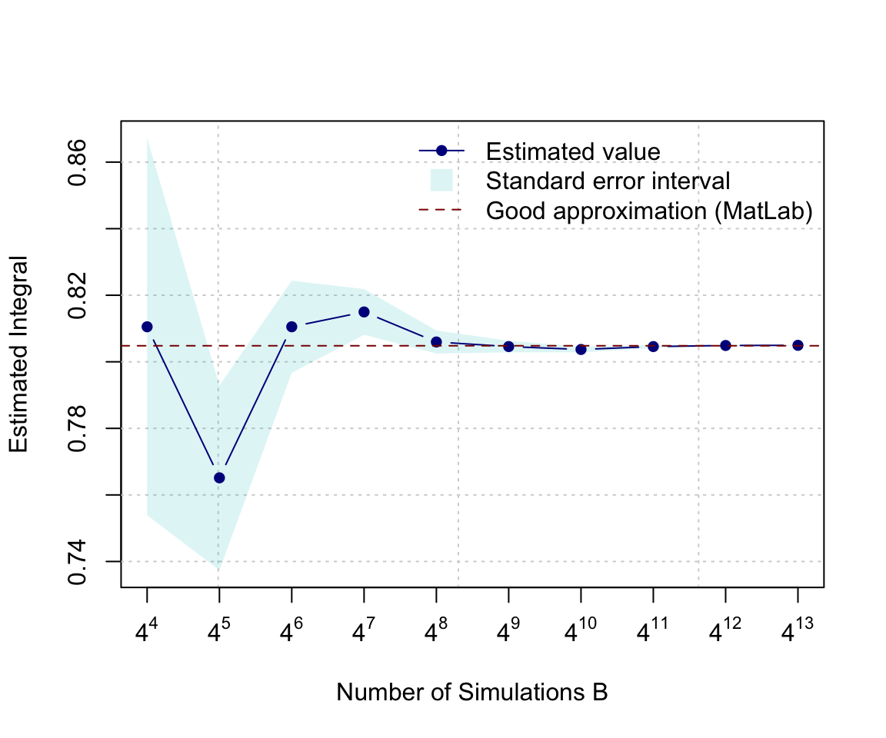

Chapter 6 Case Study: Monte-Carlo Integration
6.1 Introduction
Monte Carlo integration is a powerful technique for numerical integration. It is particularly useful to evaluate integrals of “high-dimension”. A detailed (and formal) discussion of this method is clearly beyond the scope of this class and we shall restrict our attention to most basic form(s) of Monte Carlo Integration and briefly discuss the rational behind this method.
Originally, such Monte Carlo methods were known under various names among which statistical sampling was probably the most commonly used. In fact, the name Monte Carlo was popularized by several physics researchers, including Stanislaw Ulam, Enrico Fermi and John von Neumann. The name is believed to be a reference to a famous casino in Monaco where Stanislaw Ulam’s uncle would borrow money to gamble. Enrico Fermi was one of the first to this technique which he employed to study the properties newly-discovered neutron in the 1930s. Later, these methods played for example a central role in many of the simulations required for the Manhattan project.
Suppose we are interested in computing the following integral:
\[I = \int_a^b f(x) dx.\]
Of course, this integral can be approximated by a Riemann sum,
\[I \approx \Delta x \sum_{i = 1}^n f(a + (i-1) \Delta x),\]
where \(\Delta x = \frac{b - a}{n}\;\) and the idea behind this approximation is that as the number of partions \(n\) increases the Riemann sum will become closer and closer to \(I\). Also (and under some technical conditions), we have that
\[I = \lim_{n \to \infty} \Delta x \sum_{i = 1}^n f(a + (i-1) \Delta x).\]
In fact, the rational of a Monte Carlo Integral is quite close to the Riemann sum since, in its most basic form, we approximate \(I\) by averaging samples of the function \(f(x)\) at uniform random point within the interval \([a, b]\). Therefore, the Monte Carlo estimator of \(I\) is given by
\[\begin{equation} \hat{I} = \frac{b - a}{B} \sum_{i = 1}^B f(X_i), \tag{6.1} \end{equation}\]where \(X_i = a + U_i (b - a)\) and \(U_i \sim \mathcal{U}(0,1)\). In fact, (6.1) is quite intuitive as \(\frac{1}{B} \sum_{i = 1}^B f(X_i)\) represents an estimation of the average value of \(f(x)\) in the interval \([a, b]\) and thus \(\hat{I}\) is simply the average value time the length of the interval, i.e. \((b-a)\).
6.2 Properties
A more formal argument on the validity of this approach can be found in analyzing the statistical properties of the estimator \(\hat{I}\). In order to do so, we start by considering its expected value \[ \mathbb{E}\left[ \hat{I} \right] = \frac{b - a}{B} \sum_{i = 1}^B \mathbb{E}\left[ f(X_i) \right] = \frac{b - a}{B} \sum_{i = 1}^B \int f(x) g(x) dx, \]
where \(g(x)\) denotes the pdf of \(X_i\). Since \(X_i \sim \mathcal{U}(a, b)\) it follows that
\[ g(x) = \left\{ \begin{array}{ll} \frac{1}{b - a} & \mbox{if } x \in [a, b] \\ 0 & \mbox{if } x \not\in [a, b] \end{array} \right. \]
Therefore, we have
\[ \mathbb{E}\left[ \hat{I} \right] = \frac{b - a}{B} \sum_{i = 1}^B \int_a^b \frac{f(x)}{b-a} dx = \int_a^b f(x) dx = I, \]
Since \(X_i\) are iid, the same can be said about \(f(X_i)\) and therefore by the Strong Law of Large Numbers we have that \(\hat{I}\) converge almost surely to \(I\), which means that
\[ \mathbb{P}\left(\lim_{B \to \infty} \hat{I} = I \right) = 1. \]
This result implies that as the number of simulations \(B\) goes to infinity we can guarantee that the solution will be exact. If you are unfamiliar or don’t remeber well the Strong Law of Large Numbers we provide a reminder in the comment box below.
Unfortunately, this result does give us any information on how quickly this estimate converges to “sufficiently accurate” solution for the problem at hand. This can be done by studying the variance of \(\hat{I}\) and its rate of convergence. Indeed, we have
\[ \begin{aligned} \operatorname{var} \left( \hat{I} \right) &= \left(\frac{b - a}{B}\right)^2 \sum_{i = 1}^B \left\{\mathbb{E}\left[f^2(X_i)\right] - \mathbb{E}^2\left[f(X_i)\right]\right\}\\ &= \frac{1}{B^2} \sum_{i = 1}^B \left\{(b-a) \int_a^b f^2(x) dx - \left(\int_a^b f(x) dx \right)^2 \right\}\\ &= \frac{(b-a) I_2 - I^2}{B} \end{aligned} \]
where \(I_2 = \int_a^b f^2(x) dx\). A simple estimator of this quantity is given by
\[ \hat{I}_2 = \frac{b - a}{B} \sum_{i = 1}^B f^2(X_i), \]
and therefore using \(\hat{I}\) we obtain:
\[ \widehat{\operatorname{var}} \left(\hat{I} \right) = \frac{(b-a) \hat{I}_2 - \hat{I}^2}{B} = \frac{b - a}{B^2} \sum_{i = 1}^B\left[ (b - a )f^2(X_i) - f(X_i)\right] \]
Thus, it is easy to see that the rate of convergence of \(\widehat{\operatorname{var}} \left(\hat{I} \right)\) is \(B^{-1}\) and we may write \({\operatorname{var}} \left(\hat{I} \right) = \mathcal{O}(B)\). This implies that if we wish to reduce the error (or standard deviation) by half we need to quadruple \(B\). Such phenomon is very common in many research such as Statistics is often called the curse of dimensionality.
6.3 Implementation
The function mc_int(), which is available in the support package, implements the above method. This functions has four inputs:
x_range: A vector containing the integration domain, i.e. \(a\) and \(b\),fun: A string containing the function you wish to integrate where \(x\) is used to indicate the variable of integration,B: A numeric value to denote the number of Monte-Carlo replications,seed: A numeric to control the seed of the random number generator.
For example, if you want to estimate
\[ \int_1^3 \frac{\exp\left(\sin(x)\right)}{x} dx, \]
using \(10^4\) Monte-Carlo replications, you can use the following command:
mc_int(x_range = c(1,3), fun = "exp(sin(x))/x", B = 10^5)## $I
## [1] 2.558104
##
## $var
## [1] 1.401222e-05At this point, it is probably a good idea to try to programm this yourself and to compare your results (and code!) with the function mc_int(). This should be rather easy to implement but one thing that may be a little delicate is how to pass as an input the function you wish to integrate. A possible way of doing this is to use a string for this purpose so that, for example, if we have to integrate the function \(\sin(x)\) you could simply write fun = sin(x) when calling your function. This implies that we should be able to “transform” a string into a function that we can evaluate, which is something that we can achieve by combining the functions eval and parse. An example is provided below:
my_fun = "x^2"
x = 0:3
eval(parse(text = my_fun))## [1] 0 1 4 9If you having trouble to understand what these functions are doing have a look to their help files with write ?eval and ?parse.
6.4 Example: Normal Distribution
Suppose that \(X \sim \mathcal{N}(4, 1.25^2)\) and that we are interested in computing the following probability \(\mathbb{P}\left(1 < X < 4.5 \right)\). The probability density of the normal distribution for a random variable with mean \(\mu\) and variance \(\sigma^2\) is given by:
\[ f(x) = \frac{1}{\sqrt{2 \pi \sigma^2}} \exp \left(- \frac{\left(x - \mu\right)^2}{2 \sigma^2}\right). \]
Therefore, the probability we are interested in can written as the following integral
\[ \mathbb{P}\left(1 < X < 4.5 \right) = \int_1^{4.5} \frac{1}{\sqrt{3.125 \pi}} \exp \left(- \frac{\left(x - 4\right)^2}{3.125}\right). \]
Analytically, this is not an easy problem and of course there are many ways to solve it. However, we could try to use Monte-Carlo integral to solve it. For example:
my_fun = "1/sqrt(3.125*pi)*exp(-((x - 4)^2)/3.125)"
(prob = mc_int(x_range = c(1, 4.5), fun = my_fun, B = 10^7))## $I
## [1] 0.6471691
##
## $var
## [1] 1.449985e-08Based on this result, we can write \(\mathbb{P}\left(1 < X < 4.5 \right) \approx 64.72 \%\) with a standard error of about 0.01%. We can compare our results with what we would obtain with the function pnorm which provide a nearly exact result:
pnorm(4.5, 4, 1.25) - pnorm(1, 4, 1.25)## [1] 0.6472242This shows that our estimation is within one standard error of a near perfect result.
6.5 Example: Nonelementary integral
Layman’s terms, a nonelementary integral of a given (elementary) function is an integral that is cannot be expressed as an elementary function. The French mathematicien Joseph Liouville was the first to proof the existing of such nonelementary integral. An well-known example of such integrals are the Fresnel integrals, which have been used for a very wide range of applications going from the computation of electromagnetic field intensity to roller roster design. These integrals are defined as:
\[S(y) = \int_0^t \sin\left(x^2\right) dx \;\;\;\;\;\; \text{and} \;\;\;\;\;\; C(y) = \int_0^y \cos \left( x^2 \right) dx.\]
In this example, we will only consider \(S(y)\). In general it is believed that the most convenient way of evaluating these functions to arbitrary precision is to use power series representation that converges for all \(y\):
\[ S(y) = \sum_{i = 1}^\infty \, \left(-1\right)^n \, \frac{y^{4i + 1}}{\left(2i + 1\right) \, !\left(4i + 3\right)}. \]
In this example, we will study the estimation of \(S(\pi)\) as well as the precision of this estimation.
B = 4^(4:13)
results = matrix(NA, length(B), 2)
for (i in 1:length(B)){
mc_res = mc_int(c(0, 2), "sin(x^2)", B = B[i], seed = i+12)
results[i, ] = c(mc_res$I, sqrt(mc_res$var))
}
trans_blue = hcl(h = seq(15, 375, length = 3), l = 65, c = 100, alpha = 0.15)[2]
plot(NA, xlim = range(B), ylim = range(cbind(results[, 1] + results[,2],
results[, 1] -results[,2])), log = "x", ylab = "Estimated Integral",
xlab = "Number of Simulations B", xaxt = 'n')
grid()
axis(1, at = B, labels = parse(text = paste("4^", 4:13, sep = "")))
polygon(c(B, rev(B)), c(results[, 1] + results[, 2],
rev(results[, 1] - results[, 2])), border = NA, col = trans_blue)
lines(B, results[, 1], type = "b", col = "blue4", pch = 16)
abline(h = 0.8048208, col = "red4", lty = 2)
legend("topright", c("Estimated value", "Standard error interval", "Good approximation (MatLab)"), bty = "n",
pch = c(16, 15, NA), lwd = c(1, NA, 1), lty = c(1, NA, 2),
pt.cex = c(1, 2, NA), col = c("blue4", trans_blue, "red4"))
6.6 Problem: antithetic sampling
As we saw in the previous sections, “plain” Monte Carlo integration (which is what we discussed thus far) typically has an error variance of the form \(\sigma^2/B\) (in the case of the estimator we consider previously we have \(\sigma^2 = (b-a)I_2 - I^2\)). Therefore, to improve our answer we can sample with a larger value of \(B\), but this comes at the cost of a greater computational cost. Sometimes, we can find ways to \(\sigma^2\) instead by modifying our estimator of \(I\). Methods to do this are known as variance reduction techniques, one them is know as antithetic sampling. Th